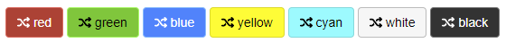
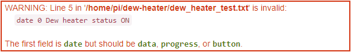
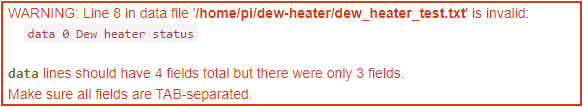
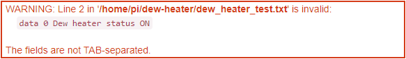

You can add information and buttons to the WebUI's System page without having to change any Allsky files. The data can be anything you want, but often contains weather, dew heater, and/or fan data.
This documentation page assumes you are familiar with writing scripts; if so, adding the information is straightforward if you follow the instructions on this page.The image below shows the types of items that can be added:
- Simple data: "Allsky is the BEST!!!"
- Progress bar: "Dew heater status"
- Buttons: "Heater ON" and "Heater OFF". Clicking a button performs an action that you define.
Details
The information to display on the System page is described in one or more "data files" which are listed in the System Page Additions setting. This section describes the format of those data files.
You need to provide the script(s) to create the data files.
Each data file contains one or more lines.
Blank lines and lines that begin with # are ignored.
Each remaining line will display something on the
System page
and must contain the fields listed in the tables below, separated by tabs.
As a very simple example, if you want to add the 2 buttons in the image above to turn your dew heater on and off you'd have a file called, for example, /home/pi/my_buttons.txt. That file needs 2 lines describing the attributes for each button such as color and what it should say (e.g., "Heater ON"). The exact contents of those lines are described below. The buttons appear on the System page when you set the System Page Additions setting to /home/pi/my_buttons.txt.
There are three types of lines in a data file. The first word of a line determines what type of line it is:
- data
lines specify basic, two-column information that goes before the first progress bar.
These lines are good when the data has a single value like:
Ambient temperature 20 C - progress lines display as progress bars like the CPU Temperature bar in the image above. Your bars go after the last system-supplied progress bar and are good when the data has an associated status, for example, when the CPU is too hot its bar turns red.
- button lines add a button to the page under the last system-supplied button, and are used to initiate an action like turning a dew heater on.
| data lines | |||
|---|---|---|---|
| Fields | Description | Typically changes when data is updated? | |
| type | Must be data. Defines the line type. |
Never. | |
| timeout | Number of seconds after the data file was created that the data should expire.
0 disables the check.
Expired data has (EXPIRED)
appended to the label. |
No. | |
| label | The name for this data, for example: Ambient temperature. |
No. | |
| data | The actual data - what should appear in the second column on the web page.
For example, for 20 C. |
Yes - every time new data is written to the file. | |
| progress lines | |||
|---|---|---|---|
| Fields | Description | Typically Changes | |
| type | Must be progress. |
Never. | |
| timeout | Number of seconds after the data file was created that the data should expire.
0 disables the check. Expired data has
(EXPIRED) appended to the label.
|
No. | |
| label | The name for this data, for example: Dew point. |
No. | |
| data | The data to appear inside the progress bar.
Typically a number followed by an optional unit specifier,
for example, 20 C for temperature, but could be any text.
|
Yes - every time new data is written to the file. | |
| minimum value | The minimum possible value of current value; often 0,
but for a temperature will usually be negative.
Must be a number. |
No. | |
| current value | The current value of the data.
This determines how wide the progress bar is.
Will typically be the same as data without the unit specifier,
for example, 20.
This value should normally be between minimum value
and maximum value inclusive.
Must be a number. |
Yes - every time new data is written to the file. | |
| maximum value | The maximum possible value of current value; often 100,
especially for percents.
For a temperature, use the highest value you expect the temperature to be.
Must be a number. |
No. | |
| danger | A current value greater than or equal to the danger
value causes the progress bar to turn
.
Must be a number. |
No. | |
| warning | A current value greater than or equal to the warning
value and less than the danger value causes the progress bar to turn
.
The progress bar will be
.
for any value less than warning.
Must be a number. |
No. | |
| button lines | |||
|---|---|---|---|
| Fields | Description | Typically Changes | |
| type | Must be button. |
Never. | |
| message | An optional message that should appear at the top of the page after the
button is pressed, if the button command was successful.
For example, Dew heater turned on.
If the command was not successful an error message is
displayed containing any output from the command.
Use - (minus sign) to indicate no message should be displayed on success
(error messages will still be displayed).
|
No. | |
| command | The script that should be executed when the button is pressed.
For example, /home/pi/turn_on_dew_heater.sh.
If needed you can prepend sudo to the command.
|
No. | |
| button color | The button's color. Choices are: red, green, blue, yellow, cyan, white, and black. See the Tips section for information on button colors. | No. | |
| FA icon | The Fonts Awesome (FA) icon on the button.
For example, the right-facing triangle on the "Start Allsky" button has an
FA icon of "play".
If you don't want an icon on the button, enter - (minus sign).
|
No. | |
| button label | What should appear on the button face, for example, Heater ON. |
No. | |
Example
This section gives an example of adding items to the WebUI's System page. The example assumes you have a weather station that provides the ambient temperature, humidity, and dew point. Further, your allsky camera has a dew heater that you want to automatically turn on and off depending on the weather.
You wrote a script called /home/pi/weather/getWeatherData.sh that polls the weather station and writes the ambient temperature, humidity, and dew point to a data file called /home/pi/weather/weatherdata.txt every minute. You must manually turn the dew heater on and off via a Python script called /home/pi/dewheater/toggleDewHeater.py. This command toggles the status of the dew heater and writes the new status (either "on" or "off") to the data file /home/pi/dewheater/status.txt whenever you call the script.
To get this working, consider the following:
Determine what data you want to display
You want to display the temperature, humidity, dew point, and dew heater status. You will use the humidity and dew point numbers to determine if you should turn the dew heater on or off via a toggle button you'll add to the web page. You want the ambient temperature in Celsius.Here's what you'll add to the WebUI's System page:
- temperature
- humidity
- dew point
- dew heater status
- a button to toggle the dew heater on/off
Determine what you want to call the items
This is pretty easy. You will set the label fields as follows:- temperature: Ambient temperature
- humidity: Humidity
- dew point: Dew point
- dew heater status: Dew heater status
- button: Toggle dew heater
Determine how you want the data displayed
The temperature is just a number with no "good" or "bad" value so it will be of type data.Although the dew point is also just a number, you want to highlight it when it's getting close to the ambient temperature so you'll know it's possible for dew to form. Hence, it will be of type progress.
If the humidity gets too high you want to call attention to it, so it will be of type progress.
The dew heater toggle switch will be of type button.
Determine expiration timeout
If the weather data gets too old it may fool you into turning the dew heater off when it should remain on, so you want its data to expire. Your weather station provides new data every minute. If it misses a minute or two you don't want the data on the System page to turn red, so you'll set the temperature and dew point timeout fields to300 seconds (5 minutes).
Just for fun you'll set the humidity timeout value to
600 seconds (10 minutes).
The dew heater status information doesn't change unless you manually turn it on or off,
so you don't want it's status to expire, hence will use 0 for its timeout value.
Timeout values don't apply to buttons.
Determine progress bar cutoff values
You've noticed that when the humidity gets above 90% you get dew on the inside of the dome, so you'll set the dew heater danger value to85
so it's bar turns red.
You aren't sure what to use for the warning
value so you'll initially set it to 75,
and will adjust it later if needed.
By definition humidity ranges from 0% to 100% so use 0 and 100 for its
minimum value and maximum value respectively.
The next paragraph is an advanced topic so feel free to skip it.The cutoffs for the dew point will vary based on the temperature so require some logic in getWeatherData.sh. Let's say you decide to set the dew point danger cutoff to be 90% of the ambient temperature, and the warning cutoff to be 80%. This means if the ambient temperature is 20 C, the dew point danger cutoff would be 18 C (20 * 0.9) and the warning cutoff would be 16 C (20 * 0.8). You aren't interested in dew point values significantly less than the ambient temperature since the chance of dew in those cases is almost zero, so you'll set the dew point minimum value to the ambient temperature minus 5 degrees. Likewise, you aren't interested in dew point values significantly greater than the ambient temperature since it's almost certain there will be dew, so you'll set the maximum value to the dew point danger value plus 3 degrees. This in effect sets the left side of the progress bar to be (ambient - 5) and the right side of the bar to be (danger + 3).
[This may be confusing now, but will clear up when you see what it looks like and play around with different values.]
The other items are of type data and button so this step doesn't apply to them.
Determine what the buttons should look like
You like green so will make the dew heater toggle button green by specifying its button color asgreen.
You want an icon on the button since the other buttons have icons,
so you go to Font Awesome
to look for an icon (Allsky uses Font Awesome version 6).
You pick the "random" icon so set the button's FA icon field to random.
Specify the data files
You need to enter the names of your data files (i.e., the files created by your scripts) in the System Page Additions setting. But how many data files should you have? You could put everything in one file but you have two scripts that create data files and would need to coordinate between them so they don't overwrite each other. You decide on three data files containing:- weather data
- dew heater status
- button information
This is what you enter into the System Page Additions setting.
/home/pi/weather/weatherdata.txt:/home/pi/dewheater/status.txt:/home/pi/dewheater/button.txt
The file names must be full path names and must be separated by colons (":").
The data, progress, and button lines in the first data file will appear first on the System page; those in the second file will appear second, etc. You can change the order items appear by changing the order of data file names in the System Page Additions setting.
Create/modify scripts to update the data file(s)
The getWeatherData.sh script needs to write the three weather data lines to /home/pi/weather/weatherdata.txt. It helps if you have the script create header lines in the output file so you remember what field is what. The script's logic would be:- Get the data from the hardware.
- Optionally write a data header comment to /home/pi/weather/weatherdata.txt. See line 1 below.
- Append the Ambient temperature data line to the file (line 2).
- Optionally append a blank line for readability (line 3).
- Optionally append a progress header comment to the file (line 4).
- Calculate new danger, warning, minimum value, and maximum value numbers for the Dew point based on the ambient temperature (line 5).
- Append the Dew point progress line (line 6).
- Append the Humidity progress line (line 7).
- Wait for some period of time, then go back to step 1.
Using the decisions you made above, the /home/pi/weather/weatherdata.txt would look like the following, assuming the temperature was 20 C, the dew point was 17 C, and the humidity was 87%.
The initial line numbers below are only for illustration purposes and should NOT appear in your file.
1 # Type Timeout Label Data 2 data 300 Ambient temperature 20 C 3 4 # Type Timeout Label Data Min Current Max Danger Warning 5 progress 300 Dew point 17 C 12 17 21 18 16 6 progress 600 Humidity 87% 0 87 100 85 75
Note all fields are separated by one or more tabs
(multiple tabs in a row are counted as a single tab).
The header lines (which are ignored since they begin with #) can be in any format,
so to ensure you have the correct fields you lined the header fields up with the data fields below.
The toggleDewHeater.py script needs to write the data line for the dew heater status to /home/pi/dewheater/status.txt every time it is executed. Its logic is:
- Get the dew heater status from the hardware.
- Toggle the status.
- Optionally write a data header comment line to /home/pi/dewheater/status.txt.
- Append the new dew heater status data line to the file.
- Output "Dew heater turned on" or "Dew heater turned off".
- Exit.
The /home/pi/dewheater/status.txt file will look like the following after clicking the button, assuming the dew heater is currently off.
# Type Timeout Label Data data 0 Dew heater status on
Since the toggle button won't change, create the /home/pi/dewheater/button.txt file manually:
# Type Message Command Color FA icon Button Label button - /home/pi/dewheater/toggleDewHeater.py green random Toggle dew heater
Notice the Message field is - which means there's no message to display on success.
This is because the toggleDewHeater.py
command outputs "Dew heater turned on"
or "Dew heater turned off", and that output is displayed as a message.
Remember that if toggleDewHeater.py exits with a failure
(i.e., a non-0 exit code)
any error message it outputs will be displayed as an error message on the web page so you
should make sure those error messages are useful.
When you press the "Toggle dew heater" button it will update the /home/pi/dewheater/status.txt data file by changing the "off" to "on" or vice versa. The rest of the data file remains the same.
Commands listed in a button's Command field must be executable by the web server running as group www-data, and must be in a directory that the web server has permissions to get to.
chmod g+x /home/pi/dewheater/toggleDewHeater.pywill fix permissions on the Command.
Files written from a button's Command must be writable by www-data.
chgrp www-data /home/pi/dewheater/status.txt; chmod g+w /home/pi/dewheater/status.txtwill fix permissions on the file.
Test, test, test. Then test some more.
To get a feel for what things look like and how the above actually works, copy/paste the above file examples to /home/pi/weather/weatherdata.txt, /home/pi/dewheater/status.txt, and /home/pi/dewheater/button.txt files on your Pi. Then add
/home/pi/weather/weatherdata.txt:/home/pi/dewheater/status.txtto the System Page Additions setting. Now, go to the System page in the WebUI and in addition to the normal information you should see the items you added. Refreshing the screen won't change those items since the data files are not being updated yet.
Clicking the "Toggle dew heater" button should display a red message
at the top of the web page that says
'/home/pi/dewheater/toggleDewHeater.py' failed: sh: 1: /home/pi/dewheater/toggleDewHeater.py: not found"
That's the output when the web page tried to execute
/home/pi/dewheater/toggleDewHeater.py which doesn't exist.
Try making changes to the three files you created.
For example, change the command for the button to echo 'Hello, world!'.
When you next click on the button you should see a green message at the top saying "Hello, world!".
Now change it to echo 'Hello, world!' ; exit 1.
What happens now?
Tips
- Do not store your data files in the allsky directory since they won't be saved when upgrading Allsky. Instead, create a directory one level above allsky and put all your files there. The System Page Additions setting WILL be saved when upgrading Allsky.
- HTML and CSS code can be applied to message, label, and data fields to add color, bolding, etc. That's how "Allsky is the BEST!!!" was formatted in the image at the top of this page.
- To see what the button colors look like, add the following lines to
/home/pi/dewheater/button.txt:
button - /home/pi/dewheater/toggleDewHeater.py red random red button - /home/pi/dewheater/toggleDewHeater.py green random green button - /home/pi/dewheater/toggleDewHeater.py blue random blue button - /home/pi/dewheater/toggleDewHeater.py yellow random yellow button - /home/pi/dewheater/toggleDewHeater.py cyan random cyan button - /home/pi/dewheater/toggleDewHeater.py white random white button - /home/pi/dewheater/toggleDewHeater.py black random black

Troubleshooting
Below are some warning messages you may receive and how to resolve them.
Wrong line type
 If you get this message but the first field IS one of those words, the fields probably aren't separated by tabs. In the example above, the data line type is misspelled.Incorrect number of fields
 Look in the tables in the Details section to see how many fields each line type has as as well as what the fields are. Also make sure ALL fields are separated by tabs. In the example above, "Dew heater status" is the message, and the "Data" field is missing (e.g., "ON" or "OFF").No tabs found
 Fields in the lines must be separated by one or more tabs. Although you can't tell from the message, the field in the file are separated by spaces.No permissions
If your scripts requiresudo you'll need to allow the web server to execute the scripts.
To do so:
- Create a file called, for example, myCommands_sudo.txt in the same directory as your other files.
- For each script that needs
sudoadd a line like:www-data ALL=(ALL) NOPASSWD:full_path_name_to_script
replacing full_path_name_to_script with the name of the script. The web server runs as the www-data user; these lines allow the web server to usesudoto run your scripts. - Run:
sudo cp myCommands_sudo.txt /etc/sudoers.d - The file should normally be recognized immediately; if not, a reboot may be necessary.